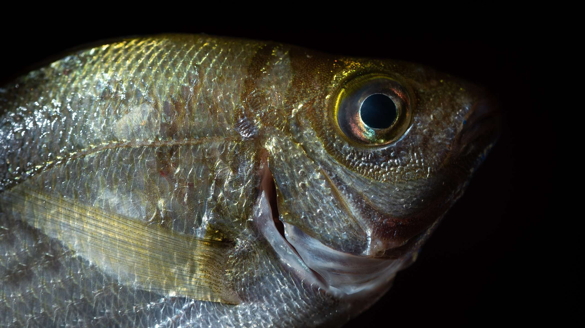

Bluefish are known for their "bluefish blitzes," where they chase schools of small baitfish to the surface, creating a feeding frenzy visible from the shore.
Overview
Investigate the powerful universe of the Bluefish, a smooth and unquenchable hunter known for its surprising rate and fierce hunting strategies. The Bluefish, scientifically known as Pomatomus saltatrix, is a medium-to-large-sized fish that is a member of the Pomatomidae family. It is a captivating species that can be found in the coastal waters of various regions around the world. The Bluefish has jaws that are powerful and have a distinctive blue-green coloration. This species is famous for its quick swimming capacities and forceful taking care of conduct, making it a pursued catch for sporting fishermen and a vital participant in marine ecosystems.
Inhabiting both calm and tropical waters, the Bluefish is regularly tracked down in the Atlantic Sea, going from North America to South America. The Bluefish is not only a formidable predator but also a crucial component of the marine food web. It thrives in nearshore environments, such as estuaries, bays, and coastal waters, where its predatory nature takes center stage. The Bluefish faces challenges like overfishing and changes in the environment, despite being a popular target for anglers due to its sporty fighting style and excellent flavor. Its diet includes a variety of smaller fish, squid, and crustaceans. Protection endeavors are in progress to guarantee the maintainable administration of Bluefish populaces and the safeguarding of their part in marine ecosystems.
Ready to plunge further into the universe of Bluefish? Take a look at the stunning images and videos in our gallery, the fascinating statistics in the World Count section, and the About section to learn more about the conservation efforts.
Habitat
The Bluefish is a flexible animal varieties that occupies a scope of sea-going conditions, including estuaries, waterfront waters, and seaward regions. This species is particularly widespread in the Atlantic Ocean, with its range extending from the northern regions of North America to the southern reaches of South America. Its adaptability to varying conditions contributes to its widespread distribution. Various continents have populations of bluefish along their coasts. The bluefish thrives in temperate and tropical waters and can adapt to a wide range of salinities and temperatures. Bluefish are known for their seasonal migration patterns, moving to different areas based on factors like water temperature and prey availability. Its presence is frequently associated with nearshore environments characterized by the availability of prey, such as schools of smaller fish and other marine organisms. While the Bluefish is adaptable, human activities like overfishing and environmental changes pose significant challenges to its habitat. This migration behavior is essential for their survival and reproductive success. Protection endeavors are fundamental to keep up with the strength of the beach front and seaward conditions that Bluefish call home.
Here are the images and videos of bluefish
Images

Videos
| Stat Category | Value |
|---|---|
| Life Span | Estimated 10 years |
| length | Approximately 3 feet |
| weight | Approximately 31 lbs |
| Top speed | 60 mph |
| Skin type | Scales |
Honesty Statement
I declare that my assignment is wholly my own work in accordance with TriOs/Mohawk Academic
Integrity Policy. No part of this assignment has been copied manually or electronically from any
other source (including web sites) except for the information supplied by the COMP10259
instructor and / or made available in this assignment for my use.
I also declare that no part of this assignment has been distributed to other students
other than my team member.
Credits
Name: Anchal
User ID:000900841
Dated: 1 December 2023
Name: Ashmani Singh
User ID:000897995
Dated: 1 December 2023
© 2022 _______ Org.